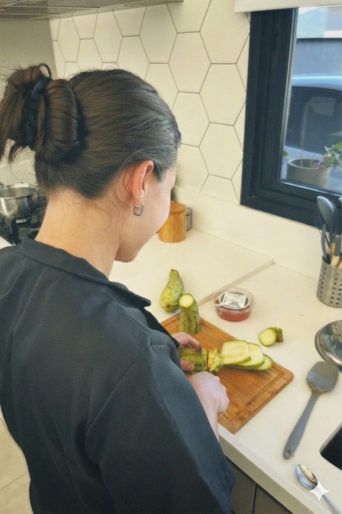

Comida que reconhece você
Preferências, hábitos e momentos da família orientam cada escolha do cardápio.
Personal Chef Comida de verdade
Eu entendo o ritmo da sua casa, planejo um cardápio que combina com você e preparo cada refeição com o cuidado de uma comida feita especialmente para a sua rotina.

Do seu jeito, sem complicação
Um processo simples, pensado para conhecer a sua casa antes de pensar no cardápio.
Conversamos sobre sua rotina, preferências, quantidade de pessoas e o que faria diferença no seu dia.
As refeições são combinadas com você, respeitando os sabores e hábitos da sua família.
Vou até a sua casa e preparo tudo com técnica, cuidado e organização.
As refeições ficam porcionadas e orientadas para você aproveitar melhor o seu tempo.
Cuidado que cabe na rotina
Enquanto a cozinha fica organizada, você ganha espaço para o que realmente pede a sua atenção — sem abrir mão do sabor de casa.
Conheça as possibilidadesPreferências, hábitos e momentos da família orientam cada escolha do cardápio.
Refeições planejadas e porcionadas para facilitar a semana.
Compras e quantidades pensadas com intenção e melhor aproveitamento.
O serviço acompanha mudanças de fase, agenda, preferências e necessidades da casa.

Conheça a chef
Formada em Gastronomia e estudante de Nutrição, quero transmitir tudo o que conheço através da comida que faço.
“Cozinhar para alguém também é uma forma de cuidar.”
Da preparação à mesa


Formatos de atendimento
Os formatos abaixo são referências iniciais e podem ser ajustados após nossa conversa.
Para começar
Para organizar alguns dias da semana com praticidade.
A partir de R$ 265,00
Solicitar atendimentoEquilíbrio na semana
Para deixar almoço e jantar bem encaminhados.
A partir de R$ 335,00
Solicitar atendimentoMais preparos
Para casas que precisam de mais volume e variedade.
A partir de R$ 405,00
Solicitar atendimentoIngredientes, deslocamento e quantidade final serão alinhados na proposta personalizada.
Vamos conversar?
Conte um pouco sobre a sua rotina. A partir daí, pensamos juntas no formato que faz sentido para a sua casa.
Conversar com a chefCada casa tem uma dinâmica. Aqui estão respostas iniciais para deixar o processo mais claro.
Ainda tenho uma dúvidaComeçamos com uma conversa sobre sua rotina e preferências. Depois, alinhamos o cardápio, o formato do atendimento e o dia em que a chef irá preparar as refeições na sua casa.
Sim. A preparação acontece na sua cozinha, com os utensílios disponíveis e os ajustes combinados previamente para que o dia flua com tranquilidade.
A forma de compra dos ingredientes será definida na proposta. A chef pode orientar a lista ou, conforme o formato contratado, cuidar dessa etapa para você.
Claro. O cardápio é construído em conjunto, unindo suas preferências às sugestões da chef e à praticidade desejada para a semana.
Restrições e preferências podem ser consideradas no planejamento, desde que informadas previamente. Casos com orientação clínica devem seguir as recomendações do profissional de saúde responsável.
A quantidade varia conforme o número de pessoas, os dias que você deseja cobrir e o formato escolhido. Tudo é dimensionado antes do atendimento.
As refeições ficam porcionadas e identificadas conforme a melhor forma de conservação. Você também recebe orientações simples para aquecer e servir.
Atendimento em Jundiaí e região. Envie uma mensagem pelo WhatsApp para confirmarmos disponibilidade e eventuais condições de deslocamento.